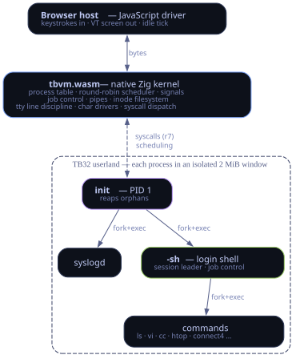
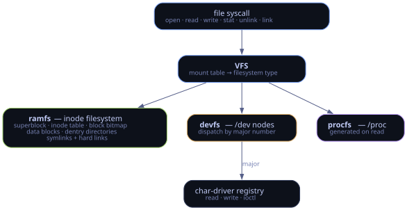

A complete operating system that runs in a browser tab. A Zig kernel, compiled to WebAssembly, runs an interpreted userland for a custom 32-bit ISA (TB32). The kernel is native code; userland reaches it only across a system-call boundary.
Three layers:
| Layer | What it is |
|---|---|
| host | a JavaScript shim: feeds input, paints an output buffer to the screen, and ticks the kernel while idle |
| kernel | tbvm.wasm, native WebAssembly: scheduler, process table, signals, filesystem, drivers |
| userland | TB32 code, interpreted per instruction; each process runs in its own isolated 16 MiB paged address space |
Userland enters the kernel only through a SYS instruction, with the call number in
r7. Each process has its own page table, so address spaces are isolated: there is no
shared memory and no virtual address that reaches another process or the kernel. Pages are
allocated on first touch (demand-zero) from a physical frame pool, and fork shares
them copy-on-write.

fork copies a process copy-on-write into a fresh address space; exec replaces the image in place;
wait reaps children. Scheduling is preemptive round-robin: each runnable
process gets a fixed instruction quantum (200k instructions) per turn, so daemons and background jobs
advance while the shell waits at a prompt.
Boot enters init as PID 1: it spawns the services and, on the
interactive console, a getty-style login that authenticates against /etc/shadow
and drops privileges to your login shell (the system is multi-user - root, tonicbox,
dev - with euid-enforced permissions). init then reaps orphans for the rest of the session. Signals are complete: handlers, masks, default actions,
and job control. PID 1 ignores any signal for which it has no handler installed, so userland cannot
terminate it.
Processes talk over real pipes, and the console has an in-kernel termios line
discipline (cooked/raw modes, echo, editing). The shell is a session leader
that puts each job in its own process group and hands the terminal to the foreground job, so
Ctrl‑C, Ctrl‑Z, and fg/bg behave the way
they do on a real Unix.
| Piece | What it is |
|---|---|
init | PID 1; spawns services + the login shell, reaps orphans |
syslogd | a daemon draining the kernel log to /var/log/messages |
| scheduler | preemptive round-robin over a pool of process slots |
| signals | kill, handlers, pause, job control |
A monolithic VFS, Linux-style: a mount table routes each path to a filesystem type, and file operations dispatch from there.
/dev nodes carry a device number and dispatch through an in-kernel char-driver registry, keyed by major number, that exposes read/write/ioctl./proc entries generated on read.
Self-hosting. TBC (a C subset) compiles to TB32 assembly, and the assembler emits a TBX executable the kernel loads. The compiler and assembler are themselves TB32 programs that run inside the OS, so building and debugging happen entirely in the terminal.
Structures are fixed-size and in-memory. The main limits:
| Area | Limit |
|---|---|
| processes | a fixed pool of process slots; beyond it, spawns are refused rather than queued |
| memory | each process has a 16 MiB paged virtual address space (4 KiB pages, demand-zero, copy-on-write fork, mmap/mprotect); pages are backed by a shared physical frame pool, so total live memory across all processes is bounded by the pool |
| filesystem | an in-memory inode/block ramdisk with a fixed inode count and a fixed number of data blocks; state is per-session (reset on reload, or saved to the browser) |
| arguments | a command takes a bounded number of arguments |
| streams | a pipe is a bounded ring buffer (64 KiB); a full pipe blocks the writer until the reader drains it, so large streams flow through without loss |
| compiler | TBC is a subset: no floats or structs. It does have enums, typedef, multidimensional arrays with brace initializers, a #if/macro preprocessor, and a malloc/mem*/str* prelude; function pointers are supported (untyped) |
| shell | functions are scoped to a single command line and do not persist across prompts |